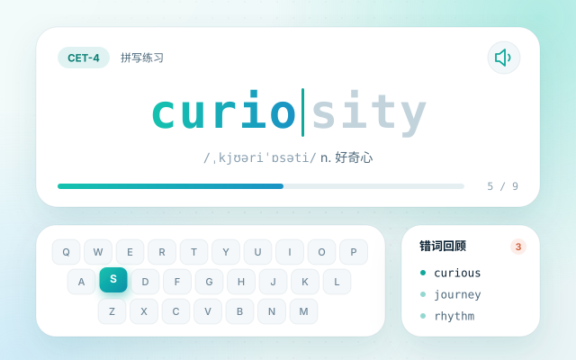
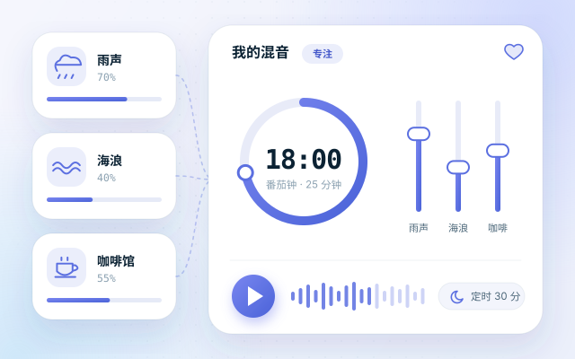
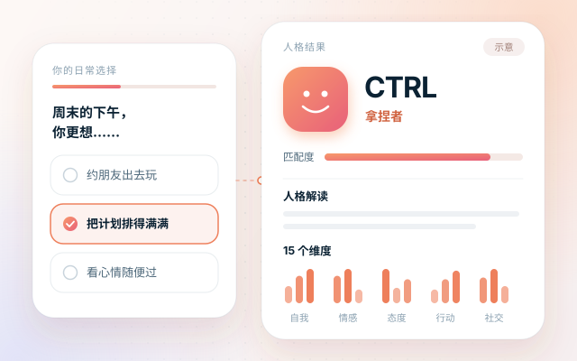

找到合拍的词，把灵感接成韵
搜索单押、双押与多押词汇，逐字核对韵母和声调；也能分享自己的押韵搭配，一起共建说唱词库。
- 搜索押韵词，查看词组之间的关联
- 登录投稿，记录每组押韵的首次提交者

INDEPENDENT MINDS. INFINITE POSSIBILITIES.
我们是软云网络，一群拥抱 AI 的探索者。
把前沿技术的无限可能，做成简单好用的日常。
4 款产品 · 从学习到创作，自由探索
向下发现 ↓01 / 我们的产品
选一个你现在用得上的，
看看它具体能帮你做什么。
搜索单押、双押与多押词汇，逐字核对韵母和声调；也能分享自己的押韵搭配，一起共建说唱词库。
选择适合你的词库，把单词拼写、发音与释义连在一起，在键盘练习中积累词汇。

把雨声、海浪和咖啡馆叠在一起，调出适合工作、学习或休息的背景声。


02 / 常用工具
5 个顺手的站内工具，
编辑、创作和整理，都在这里。
直接在本站使用，无需登录。文件在本地处理，清单与收藏保存在当前浏览器。
03 / THE WAY WE THINK
我们相信，AI 应该走进日常。
从押韵创作、单词练习，到专注时光与自我发现，
我们把每一次探索，做成用得上的产品。
保持好奇，持续创造。好的技术，应该被更多人用上。